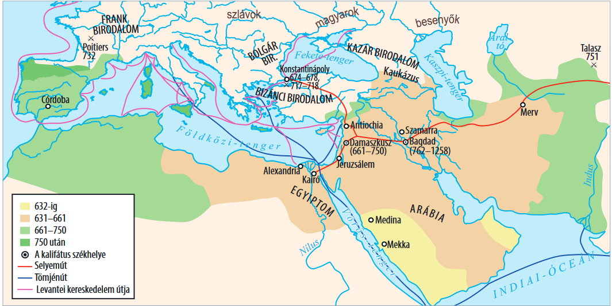
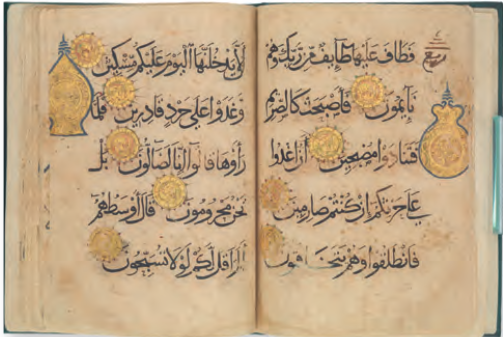

Hódító birodalmak
vissza a főoldalra
-
Az iszlám és az Arab Birodalom
Az iszlám és az Arab Birodalom
Napjainkban az iszlám a hívők létszámát tekintve a második legnagyobb világvallás. A kora középkorban alakult ki, és az arab terjeszkedés teljesen megváltoztatta az addig egységes Mediterráneum kulturális arculatát, ezzel véget vetve az ókornak a Közel-Keleten is. Az iszlám vallásról és a muszlim országokról már az általános iskolában is volt szó.
 Mohamed fellépése
Mohamed fellépéséig az arab törzsek vallását a sokistenhit jellemezte, miközben Mekka – az itt őrzöttKába szentélyben lévő „fekete kő” miatt – vallási központtá vált. Az arabok törzsi széttagoltságát Mohamed (570–632) szüntette meg. Az iszlám hit szerint a mekkai kereskedő, Mohamed látomásait az egyetlen Isten, Allah sugallta. Mohamed Allah igazságait és utasításait közvetítette utolsó prófétaként az emberiségnek (kinyilatkoztatás).
Az iszlám hit
Az iszlám szó jelentése: ’belenyugvás Allah akaratába’. A Mohamed által kialakított hitrendszer igen sok gondolatot átvett a zsidó és a keresztény vallásból. Szigorú monoteizmust hirdetett, elvetette a pogány bálványimádást.
vissza a lap tetejére